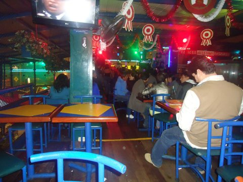
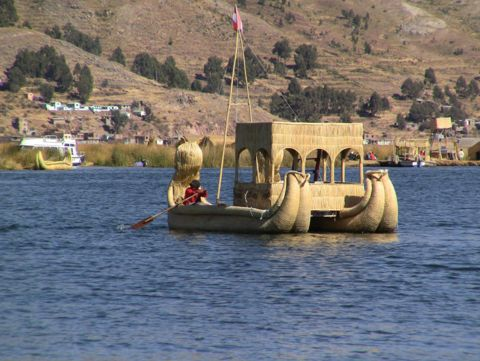

Travel South: фото и истории
В 2011 году я фотографировал каменные постройки Перу и Боливии. В 2014 году моя камера запечатлела черепа в перуанских музеях, и на одном фото я держу череп, который в коллекции называют Starchild 2. В феврале 2024 года я фотографировал в Каире каменные головы амарнского периода. Эти снимки задают сайту его вопрос: что запечатлела моя камера, что об этом может сказать наука и о каком мире заставляют думать эти формы?
Starchild 2 — название, данное коллекцией. Оно заимствовано у другого черепа, известного из Мексики, который привлёк к себе внимание благодаря Ллойду Паю. В этой галерее эти два черепа не смешиваются.
Хронология
- Август 2011 Путешествие из Лимы через Наску, озеро Титикака, Боливию и Куско обратно в Лиму: 15 мест, фото и видео.
- 30 окт. – 1 нояб. 2014 Фото черепов и видео из музеев Перу.
- 15 фев. 2024 Каменные головы амарнского периода в Египетском музее в Каире.
- 2026 Упорядочивание материала, проверка источников и ИИ-иллюстрации каменного города.
Путевой рассказ 2011–2024
Заметка Яни (Jani Korpi): мой личный опыт, а не результаты исследований. Даты взяты из временных меток видео.
Маршрут мне показала Джанина. L Судя по её инкской фамилии, она принадлежала к древнему инкскому правящему роду. В её документах этой фамилии нет, и чужим она её не называла. Мне рассказали, что инкской фамилией обычно не гордятся, потому что из-за неё дразнят «инкской принцессой».
Познакомились мы в интернете, в сообществе путешественников WAYN. У нас было три недели и три страны: Перу, Боливия и Чили. Мы передвигались на самолёте, автобусах и такси. Мы переезжали так много, что ночи проводили в автобусах, а каждый день оказывались на новом месте. График был плотным; во многих местах можно было бы провести по нескольку дней.
Везде Джанина любовалась пейзажем и просила сфотографировать её на его фоне. Я инженер, и в моей работе решают герметичность и посадки. Поэтому я часто застывал, разглядывая швы, а не пейзаж. Джанина читала людей так же внимательно, как я читал камень: она замечала обман и опасность раньше меня. Выше 4000 метров меня всё время сопровождала лёгкая головная боль.
Один вечер в Кальяо
В начале поездки мы были в Кальяо, портовом районе Лимы. Мы зашли к другу Джанины, и за нами увязалась уличная банда. По совету Джанины мы пошли в обход многоквартирного дома и на полпути повернули в обратную сторону. На улице никого не было видно. Из окна такси мы увидели, как подошла большая группа парней и стала показывать в нашу сторону. Если бы мы продолжили идти в прежнем направлении, они вышли бы нам навстречу.
Это мой опыт одного вечера, а не оценка всего района.
Путешествие по датам видео
- 29–31 июля 2011 Лима: начало пути. 31 июля: долина Писко, полоса ям на Монте-Сьерпе (Band of Holes).
- 1–3 авг. Уакачина и Паракас. →
- 5 авг. Наска: полёт над линиями в 10:52; в тот же день Канталлок, Чаучилья и Кауачи. →
- 6–8 авг. Арекипа, затем ночным автобусом в Пуно. →
- 8–10 авг. Сильюстани, озеро Титикака, Чукуито и Араму-Муру. →
- 10 авг. Граница, Тиуанако и такси в сторону Ла-Паса. →
- 11–12 авг. Самайпата. →
- 14 авг. Солончак Уюни и остров Инкауаси. →
- 15–16 авг. Граница Боливии и Чили.
- 17–19 авг. Автобусом в Куско; Куско и Саксайуаман. →
- 20–21 авг. Писак, Ольянтайтамбо и Мачу-Пикчу. →
- 24–25 авг. Кальяо, портовый район Лимы.
Три человека, три двери
Джанина показала мне маршрут в 2011 году. Кармен, адвокат, с гордостью говорившая о своей инкской семье, открыла мне дверь в коллекцию черепов в Паракасе в 2014 году. Джули, моя подруга и бывший организатор туров с Филиппин, продолжила путешествие в 2024 году. Всех их я называю только по имени.
A В 1549 году местные жители рассмеялись, когда Сьеса де Леон спросил, не инки ли построили Тиуанако (Crónica del Perú, часть I, глава CV). В 2011 году те же камни мне показала потомок инкского рода.
Чего я ещё не мог знать
- T Датировка Пума-Пунку уточнена в 2023 году: строительство началось около 580 года н. э., последние добытые и обработанные камни относятся примерно к 630 году, а работы прекратились около 710 года н. э. (Marsh и др. 2023).
- T В 2024 году обследование с помощью ИИ выявило в Наске 303 новые фигуры (Sakai и др. 2024).
- T В 2025 году исследователи сообщили о Паласпате — храмовом комплексе культуры Тиуанако примерно в 215 км к юго-востоку от Тиуанако (Capriles и др. 2025).
Тогда и сейчас
До поездки я допускал, что такие швы, как в Пума-Пунку и Саксайуамане, невозможно сделать каменными орудиями. Теперь: строителями были люди Тиуанако и инки, но скорость работы и инструменты — по-прежнему хороший вопрос.
Самое важное фото для меня — фото 04, Starchild 2 в моих руках. Это единственный момент, когда я смотрел на историю не через стекло.
Куда бы я вернулся? В Пума-Пунку, с сегодняшними знаниями. Было бы интересно снова объехать все действующие раскопки спустя 20 лет.
Эпилог
Годы спустя Джанина предложила мне 500 гектаров амазонских джунглей за 100 000 евро. Старшие в семье уже не могли обходить и размечать границы своей земли. Я подумал: пусть гектар тропического леса и кормит небольшую деревню, место было так далеко, что я никогда не смог бы пользоваться этой землёй, а землю, куда никто не приезжает, заберут местные. Я вежливо отказался.
Маршрут начался с рода, чью фамилию не произносят вслух, и закончился землёй, границы которой уже никто не мог обойти.
Оригинальные фотографии 2011 года




Три маршрута


Что установили исследования
- Линии Наски Исследование, опубликованное в 2024 году, выявило 303 новые фигуры в дополнение к 430 известным ранее. (Sakai и др. 2024)
- Мачу-Пикчу По радиоуглеродным датам место использовалось уже около 1420 года — раньше, чем следовало из хроник. (Burger и др. 2021)
- Пума-Пунку Строительство началось около 580 года н. э. и завершилось около 710 года н. э., за века до инков. (Marsh и др. 2023)
- Паракас Из 159 изученных людей из гробниц Серро-Колорадо у 98 процентов череп был сформирован в детстве. (Gómez-Mejía и др. 2022)
- Каир и Перу Вытянутые головы Амарны — скульптуры, черепа Перу — кость. Сходство форм зрительное и не доказывает связи.
Фотогалереи: 15 мест
Побережье Перу
 Линии НаскиКакие геоглифы мог увидеть тот, кто шёл по тропе?
Линии НаскиКакие геоглифы мог увидеть тот, кто шёл по тропе? Некрополи и акведуки Наски: Чаучилья, Кауачи, КанталлокКаким видели саманный двор Кауачи люди, проходившие через него?
Некрополи и акведуки Наски: Чаучилья, Кауачи, КанталлокКаким видели саманный двор Кауачи люди, проходившие через него? Паракас и УакачинаПустыня обрывается прямо в холодное море, полное жизни.
Паракас и УакачинаПустыня обрывается прямо в холодное море, полное жизни.Титикака
 СильюстаниПогребальная башня, которая вверху шире, чем у основания.
СильюстаниПогребальная башня, которая вверху шире, чем у основания.
Пуно и озеро ТитикакаОстрова урос сплетены из тростника тоторы, и их приходится постоянно обновлять. Чукуито: Инка-УйоДесятки каменных фаллических символов в небольшой ограде. Сколько им лет?
Чукуито: Инка-УйоДесятки каменных фаллических символов в небольшой ограде. Сколько им лет? Араму-Муру (Хайю-Марка)Дверной проём, высеченный в скале, без какого-либо помещения за ним.
Араму-Муру (Хайю-Марка)Дверной проём, высеченный в скале, без какого-либо помещения за ним.Куско и Священная долина
 КускоКто сделал этот шов и что построили вокруг него позже?
КускоКто сделал этот шов и что построили вокруг него позже? СаксайуаманТри зигзагообразные стены поднимаются по склону над Куско.
СаксайуаманТри зигзагообразные стены поднимаются по склону над Куско. Мачу-ПикчуКогда в 1911 году сюда пришёл Хайрам Бингем, здесь жили местные крестьяне.
Мачу-ПикчуКогда в 1911 году сюда пришёл Хайрам Бингем, здесь жили местные крестьяне. © Jani Korpi · CC BY-SA 3.0 · Wikimedia CommonsОльянтайтамбоРозовые камни брошены вдоль дороги от каменоломни.
© Jani Korpi · CC BY-SA 3.0 · Wikimedia CommonsОльянтайтамбоРозовые камни брошены вдоль дороги от каменоломни. Писак и Священная долинаТеррасы спускаются по склону горы, как гигантская лестница.
Писак и Священная долинаТеррасы спускаются по склону горы, как гигантская лестница.Боливия


Галерея на всех языках
Откройте всю галерею, 15 мест, на своём языке.